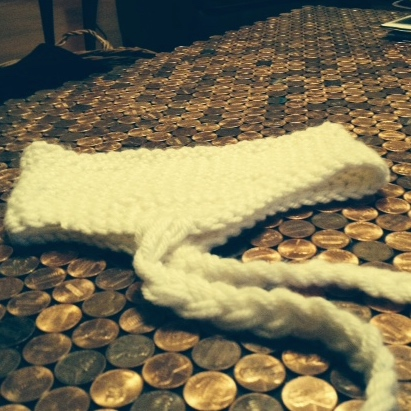

About
The story of my life.
-

An Early Beginning
My appreciation for technology started at the early age of two. I have the privlage to say I am a second generation geek because of my father. I started out sitting on his lap just toggling with the mouse and was mesmerized by the colors on the screens. Little did I know I was a very young UI tester for the K-12 software he was working on. Growing up with technology always at my figure tips has allowed me to witness and appericate the evolution of software, and see it become more user friendly.
-
Cardboard Creations
With duct tape and cardboard, my passion for building started at a young age. As a young child if I desired a toy, I made it; from a doll house, to a cash register, to Santa’s sleigh, and even a ‘computer.' If I could find a piece of cardboard, I could make anything I desired. With just a roll of duct tape and a simple cardboard box, my imagination would run wild.
-

A Company Was Born
While attending high school I learned how to crochet but never imaged that my simple hobbit would become profitable. I started out making a headband with earflaps called a Broyo. It turned into me making them for a friend, then a friend of a friend, and then the whole high school. My demand became so high I was able to recruit two employees to help with the load. Overall, my creativity and drive allowed me to create a small business and learn what it takes to run it as a teenager.
-
Finding The Correlation
From my earliest memories my favorite classes have always been math. During college I attended two undergraduate research experiences. Through research I found out how hard it is to solve for the unknown but at the same time so exciting. I was able to challenge myself intellectually to think outside the box to prove my theory.
-
Finding My Stride
In my senior year of college I found myself in an introductory computer science course. It was there where my world got just a little bit bigger. I became much more aware of where my innovative and analytical self could meet my creative and driven self halfway. It is in the realm of computer science and software development where I can create whatever I desire; I could be creative and analytical in my approaches, and drive towards creating great applications for not only myself, but many others.
-
Beginning
To
Run!